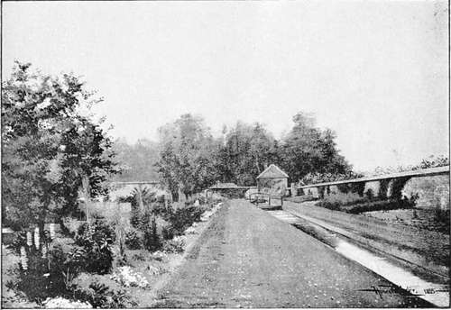

Early Tudor Gardens. Part 5
Description
This section is from the book "A History Of Gardening In England", by Alicia Amherst. Also available from Amazon: A History Of Gardening In England.
Early Tudor Gardens. Part 5
There seem to have been two gardens at Beaulieu, or Newhall, the " smalle gardin," and "the grete." The small appears to have been the kitchen-garden, and furnished the " king's table" with "herbes and rootes, and strawberries, artichokes, lettuces, cucumbers, and sallet herbes." The keeper of the great garden in 1532 was one John Rede.*
The gardens within the walls of the Tower of London and at Baynarde's Castle, were kept up in Henry the Eighth's time. Frequent entries in the accounts show that there were royal gardens at Wanstead, where Robert Pury was gardener (i532),† Westminster, Waltham, Woodstock, and Oatlands, but they were probably not on so grand a scale as the more favourite resorts of the King. Windsor received less attention than the other royal gardens during this reign. The gardens at Windsor have now so.completely changed, that even the site of the old garden cannot be identified with certainty. There is an account by an eye-witness of Louis de Bruye's reception, in 1472, by Edward IV. at Windsor. They go out hunting, and return late in the evening. " Bey that tyme yt was nere night yett the king showed hym his garden & vineyard of pleasure & so turned into the Castel agayne." This garden and vineyard probably remained unaltered in Henry the Eighth's reign, as we find no mention of changes being made there. The gardens at York Place, the Whitehall of later times, had been laid out by Wolsey with great taste and care, and this place, like Hampton Court, was also given over to the King.
Towards the end of his reign, Henry VIII., having completed his alterations at Hampton Court, turned his attention to laying-out and beautifying the grounds at Nonsuch, near Ewell, in Surrey.‡ He purchased the lands of Cuddington, in 1538, and there built a palace :— " Which no equal has in art of fame Britons deservedly do Nonsuche name".
* State Papers, Henry VIII. R. O. † Ibid.
‡ Minister's Accounts, 31-32 Henry VIII., No. 10. Sir Ralph Sadler, steward of the manor, received 4d a day for the custody of " Gardinorum, Pomariorum et ortorum".
Another contemporary writer, describing the place, says of it : " The Palace itself is so encompassed with parks, full of deer, delicious gardens, groves ornamented with trellis work, cabinets of verdure, and walks so embowered by trees, that it seems to be a place pitched upon by Pleasure herself to dwell in along with Health."* Henry VIII. never quite completed Nonsuch, but it was held for a time by Henry FitzAlan, Earl of Arundel, who continued to carry out the King's designs. Queen Elizabeth, Anne, Queen of James L, and Henrietta Maria, all paid visits to the place, but did not stay there for long. The parliamentary survey of the palace and gardens, made in 1650, shows there were several walled gardens, divided by thick thorn hedges, also alleys, a wilderness, and privy garden, and a large kitchen-garden. There was also a terrace in front of the house, and a " handsome bowling-green." The whole was rather Italian in style, with many fountains and statues. Charles II. gave the place to the Duchess of Cleveland, who pulled it down, and the destruction of this once magnificent palace was completed by her grandson, the Duke of Grafton, who cut down the trees and destroyed the park.†
While such progress was being made in the decoration and laying-out of the flower-garden, the fruit and kitchen-gardens were not altogether neglected. Besides such fruits as were already in common use, others were introduced, and those indigenous in the country, were improved. The strawberry was largely planted, and carefully cultivated :—
"If frost do continue take this for a lawe.
The strawberies look to be covered with strawe Laid overly trim, upon crotchis and bows And after uncovered as weather allows." ‡
From the following verse, in September's husbandrie, it is clear where the strawberry plants were procured :—
" Wife unto thy garden and set me a plot With strawbery rootes of the best to be got. Such growing abroade, among thornes in the wood Wel chosen and picked proove excellent good".
* Nichols, Progress of Queen Elizabeth.
† Camden's Britannia. Ed. Gough, 1806.
‡ Tusser, Five Hundred Pointes of Good Husbandric.
It was not only for humble folk that wild strawberry roots were gathered, for, in the oft-quoted Hampton Court Accounts, we find several entries of money paid for strawberry roots, brought from the woods for the King's garden.
The raspberry had until this period been more or less ignored, and even now seems not to have been very generally grown. Turner,* in 1548, says of " Rubus ideus in Englishe raspeses or hyndberies .... growe most plentuously in the woddes in east Freseland .... they growe also in certayne gardines of Englande." He also says of them, " The taste of it is soure." The gooseberry, which does not appear in earlier gardens, was now grown. It was planted in some of Henry the Eighth's gardens in 1516. Turner calls it "a groser bushe, a goosebery bushe," and says of it " It groweth only that I have sene in England, in gardines, but I have sene it in Germany abrode in the fieldes amonge other bushes." This passage is curious, as the subject has frequently been discussed, whether the gooseberry is an indigenous plant in this country. Tusser tells us that they are to be planted in September:—
Apricot trees on old garden wall, littlecote.
* " Emptions of strowbery roots violettcs and primerosc roots for the new garden—also paid to Ales Brewer and Margaret Rogers for gathering of 34 bushels of strowberry roots, primerose and violettes at 3d. the bushel, 8s. 6d. Item to Matthew Garrett of Kyngston for setting of the said rootes and flowers by the space of 20 days at 3d. the day, 5s".
"The Barbery, Respis, and Gooseberry too Looke now to be planted as other things doo. The Goosebery, Respis, and Roses, al three With strawberies vnder them trimly agree".
Continue to: